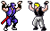

I'll tell you what's new!!
In the spirit and tradition of updates, I've whipped up this little page for those who check back to see what's new. You are entitled to know, after all. So by all means, find out!
24 Jul 2005
Gamesterlair has just won its FIRST AWARD!! The OPCFG has given this site its own award, which I will place in my Credits page. I am officially jazzed now! Oh, and I've also added a couple of graphics to my Snake page for my POW site.
23 Jul 2005
Updated my Ghosts n' Goblins Tribute site to include Arthur, his items, his enemies, and their bosses. I've only assembled nearly-finished sprite sheets for you and posted them until I could get anims done. So, the funny part is that the site's really about 50% done!
20 Jun 2005
Don't know what it is, but I've been getting busy updating lately! However, not NG4 this time. I present to you a new Ghosts n' Goblins Tribute site. Let me know what you think!
10 Jun 2005
Updated NGT Levels page. Now, each map has its own web page so I can finally animate the maps the way I want to. Now, the question of when I'll do that is still up in the air, so keep checking!
5 Jun 2005
Nothing on the NG4 front yet, but I thought I'd at least let you in on a new tribute site I created for the arcade version of P.O.W. Though it's still under construction, I do have all the maps. Hope you like!

...the home of the Angel...
5 May 2005
I'm sorry that I haven't been updating in ... wow ... nearly 2 years! I've been working on the project off and on, but so far I've only added a few new links to the Links page. On the plus side: Ninja Gaiden IV's script is complete. You WILL get the chance to see the entire story when the game's finished!
Also, I've finally gotten to work on my Skate or Die tribute site. The RACE and JAM maps have been "animatedly" updated and each course has a brief description. Some year, I'll get around to finishing the anims for the skaters.
Also, I've finally gotten to work on my Skate or Die tribute site. The RACE and JAM maps have been "animatedly" updated and each course has a brief description. Some year, I'll get around to finishing the anims for the skaters.

*Ninja Gaiden, Ninja Gaiden 2: Dark Sword of Chaos, and Ninja Gaiden 3: Ancient Ship of Doom, are trademark and copyright property of Tecmo Inc. Display of the images on this site are for ENTERTAINMENT PURPOSES ONLY!
I, the Guardian, am not for profit in the creation of this website and make absolutely no money for it. I do not work for Tecmo Inc., nor am I affiliated with Microsoft or Nintendo. I am simply an enthusiast of the Ninja Gaiden Series.
I, the Guardian, am not for profit in the creation of this website and make absolutely no money for it. I do not work for Tecmo Inc., nor am I affiliated with Microsoft or Nintendo. I am simply an enthusiast of the Ninja Gaiden Series.